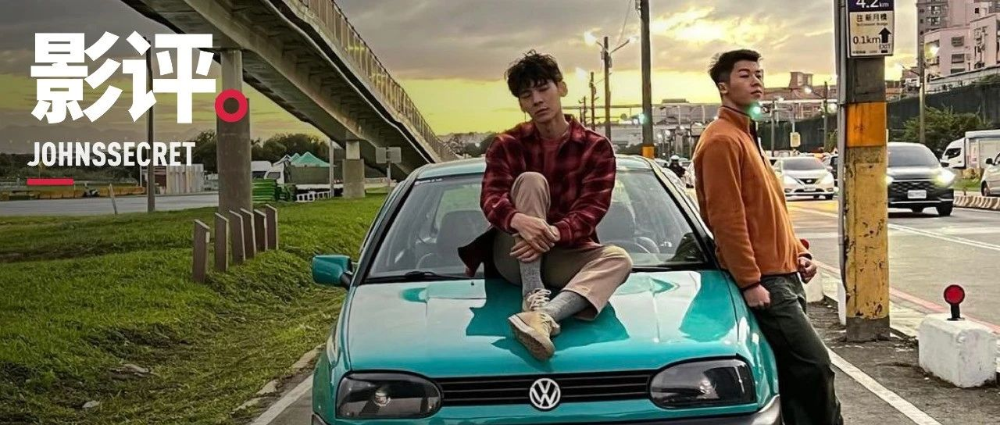

《鬼家人》：父权社会下的和解与爱情骗局
原创
宛潼
约翰斯库
2023年08月18日 01:30
广东
2023 年的夏天很热闹，《芭比》、《心跳漏一拍 2》、《风骚女子 2》、《妆红人生》、《关于我和鬼成为家人的这件事》接连上映，给我一种「哟，找到了流量密码」的感觉。
但我想重点聊的是《关于我和鬼变成家人的这件事》这部片子，或者说，东亚环境下关于酷儿文化创作表达的一些症候与无奈。
文学与艺术是对父权制进行拆解的主要战场。这些年，表达女性、性少数困境和自我救赎的片子屡见不鲜，频繁且公开地在大屏幕和流媒体上挤占着原本完全被男性、顺性别异性恋者把控的影视行业（除了这里）。他们不停地控诉着被霸权遮掩在黑暗角落的过去，用最洪亮的声音喊出「We exist」。
他们用自己截然不同的生活体验，创造出与父权制下二元性别刻板故事截然不同的多元性别、文化表达同时，也在试图夺回自己的话语权，构建出属于女性、酷儿们的文化叙事。
然而让我感到十分纳闷的一点是，有些影视作品看似在对抗父权制，却无一不被父权制的幽灵控制 —— 结局无一例外地陷入了「与家长和解」或「用爱情救赎」的大熔炉里一锅炖，就更别说父权制对他们的刻板印象了。
看《鬼家人》的过程中，脑海里止不住地想到《瞬息全宇宙》。如果剥掉这两部片子里的脑洞情节和搞笑画面，内核中「和解」这两个大字便毫不掩饰地砸在我的眼前。总有那些针锋相对的女儿与母亲、儿子与父亲，也总有那些要经历生与死才能最终握手言和的大团圆，和最后接纳了孩子的家长们。
在经济发达的国家和地区，女性和酷儿群体们通过一次又一次的文化运动乃至鲜血换来了今天「娜拉」的成功出走。可是「娜拉们」离开了之后要去哪儿？我们要过怎样的生活？建构何种亲密关系和家庭？这是迫切需要现在的我们这一代女性和酷儿社群来回答的问题。
《鬼家人》有个让我印象很深刻的画面。毛邦宇在骄傲游行上打出了「我今年 28 岁，我想要结婚」的牌子，他的阿嫲举着的牌子则是「我今年 70 岁，想看孙子结婚」。
诚然，我完全无法想象这样的画面会发生在我家人的身上。作为一个也经历了出柜的人，从出柜的那天算起，至今已经过去了六个季节，却仍然在与家庭拉扯的过程中苦叹着未来的不可知。每当和家庭的关系只要有一步的向前，对我来说都是莫大的欢喜。
作为 LGBTQ+ 大家庭的一员，我也从不否认许多性少数们希望获得婚姻的权利，更能明白「和解」与「爱情」确实是很大一部分女性与性少数群体无法绕过的命题，甚至于我在这些命题上也持有支持的立场。但编剧在创作的过程中是否有反思过，造成这种现行的根本原因，依旧是生活在父权制体系下的无奈与歧视？
影视作品作为艺术表达和人文探索的一环，可能性与多元化不可忽视，更应当肩负起探索的使命。「（顺性别异性恋模式的）爱情」、「婚姻」作为诞生于父权制下压迫的产物，就不应该成为趋之若鹜的追求。
将爱、性、婚姻、生育全部都与责任捆绑在一起的「五位一体式」亲密关系，就是父权制最大的骗局。但他们从不吝啬开动庞大的宣传机器，将这种关系称为「爱情」，向每一个来到世间的人类信誓旦旦地兜售。
如今，许多女性和酷儿们开始拒绝这种范式，探索新的亲密关系形式与组建家庭的可能，并与随之而来如海啸般的污名化做斗争（这在最近不停向后猛踩油门的世界尤甚）—— 难道这种探索和反抗过程，一点都不比「他们走进了爱情」更加值得让人颂赞吗？
与此同时，「和解」往往意味着与某位父权制家长代表的相互妥协。这些父权制家长的代表形象不一，有父亲也有母亲，甚至是家中更年长的亲人。作为传统家庭中的「一家之主」，父权的运行规则内化在每一个人身上，坚不可摧。
但在不少顺性别异性恋编剧、东亚编剧笔下的孩子们，都无一例外地渴望来自父权制家长的认可、渴望重新能够融入到父权制社会过上「幸福生活」。
这是让我非常难以理解的一点。女性和酷儿叙事的存在与发展，就是为了对抗父权制下无孔不入的对女性和性少数的性别压迫与顺直霸权，何来和解一说？在逻辑上就难以自洽。其荒唐程度不亚于让底层劳动者感恩资本家给予他们工作，让波兰的犹太人理解希特勒发动屠杀的初衷。
他们非但没有创造出哪怕一点的可能性，却绞尽脑汁、花费无数的精力用来构思「如何将酷儿们的要素用各种天马行空（但其实几乎和女性主义、酷儿文化没什么关联）的情节串起来」，再点缀一些当下热辣的肉体和屁股。他们对女性和性少数的理解之匮乏，仿佛是拿了一面镜子，一模一样地复刻了一个由女性和酷儿们组成的「新父权世界」，大唱「和解」的赞歌，歌颂「顺性别异性恋模式恋爱」给女性和酷儿带来他们所认为的「救赎」。
拜托，剧本真没这么好写。
当然，我并不否认这些作品存在的意义。
《鬼家人》在豆瓣上斩获了 8.2 的高分，我也贡献了四颗星。这其实能从侧面说明一个事情，在一些地方，女性议题和性少数议题的影视作品已经是一个司空见惯的话题，被相当一部分观众所接受和喜爱，过去那个一提到女性就是贤妻良母、纤瘦苗条，一提到性少数就是滑稽形象、性生活糜烂的时代，已经被彻底扫进了历史垃圾桶。
从这个角度来看，这些作品更像是「拍给顺性别和异性恋们看的性少数电影」。所以，特意挑选那些能让多数人共情的话题，引导一个大团圆的开心结局，倒也是无可厚非了。
另外，我也能理解「步子不能一步迈太大」的解释。就像我也认同《芭比》是一部非常温和的女性主义电影，但却能成为一颗炸雷，引爆了关于性别与父权制的讨论。这些电影能够拍摄、能够上映，而且数量越来越多，本身也意味着一种成功，我们有理由为这样的阶段性胜利喝彩。
但我相信，女性和酷儿们想要的平等绝不止步于此。
文化和艺术创作是一种话语权的争夺，在父权制依旧占据着主流舆论和宣传机器的当下，说进入了「后现代」还是太早了。而且随着这类创作的增多，女性和酷儿们再度面临了话语权被抢夺的问题：他们的文化创造，正是来自于自身作为他者、作为少数人的截然不同的生命体验。但随着这一话题成为新的流量密码，大量非女性、酷儿社群的创作者涌入，让故事陷入窠臼，抢夺他们的心血和名誉。
这并不是说女性和酷儿就得关起门来搞创作，同仇敌忾地拒绝一切社群之外的人。但当父权制再次用「和解」与「爱情」这种老旧的话题触手伸向他们，意识到这背后暗藏的阴谋和同化尤为重要。
并且在某种意义上来讲，也只有女性才能够拍出《芭比》里葛洛莉的怒吼和芭比与老年女性的长椅对话，只有 Hunter Schafer 才能在《Fuck Anyone Who's Not a Sea Blob》（亢奋特别篇第二集）里拍出对于女性气质与爱的思考，说出「我想停掉激素，不想再追求传统男性审美里的女孩那个样子」、「我想变得像大海一样有力量」这样的话。
事实上，由女性和酷儿们所创作的文学或艺术作品中，更加集中在自我内心的接纳与发掘、社会和命运的反思以及多元关系的探索上，不会掉落在获得陈腐的关系范式的陷阱里。
《戏梦巴黎》
回想起最近看完的《始于极限》，里面有几段话让我忍俊不禁：
「女人忘不了她的第一个男人」……可笑至极。「女人不可能同时爱上两个男人」……爱几个都行。「女人不能在没有爱的情况下做爱」……一试才发现容易得很。
只要婚姻还是如此「理所当然」的习俗，结了婚的人就不需要回答「为什么结婚」，唯有置身于婚姻之外的人会被反复问及「为什么不结婚」。在我看来，结婚才需要痛下决心，不结婚只是拖延做决定的结果罢了。所以，问那些做出决定的人为什么结婚，似乎才是理所当然。
事实上，女性与酷儿的创作无处不流淌着「叛逆」的血。他们砸碎旧的囚笼之后便马不停蹄地开始创造，用坚定的自我和不羁的精神创造着属于自己的「Barbie Land」。与其问他们为什么「不顺从」，倒不如反问那些编剧们：你们为何如此顺从？
如果部分东亚编剧实在写不出什么新东西的话，那我来写。
当前人用一次又一次的运动，从那个女性和酷儿不被允许看见和发声的时代，夺过了发声筒和笔杆时，他们便开始不停地界改写世界。现在，发声筒和笔传到了我们手上，我们要不停地讲自己的故事，而不必把自己塞进父权社会的样板里。
修改于